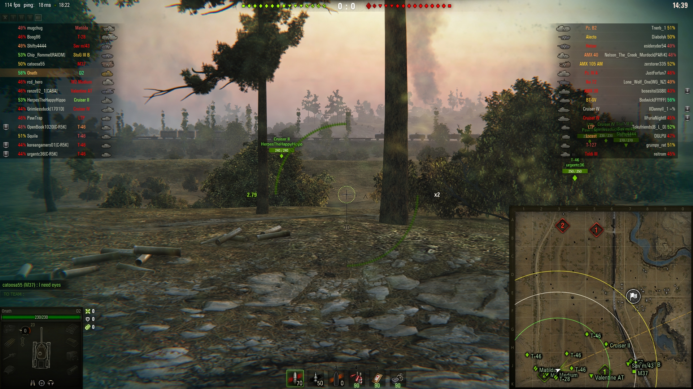
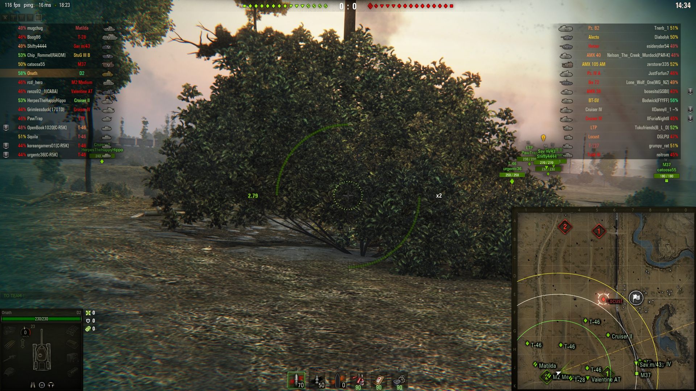

Bushes and trees
Use bushes to bump up your camouflage every chance you can.
Sit within 15m of a bush to spot other tanks and stay hidden.

As long as you can see through the bush you will be able to spot the enemy and remain hidden. If you fire like this you will get spotted.
To use a bush you want to back up 15m behind the bush (until you cannot see through it).

If you fire like this it will keep your chance of getting spotted down.
Heavy tanks
Have the worst cammo value and biggest drop when moving, or firing their gun.
Medium tanks
Have lose less camo compared to the heavys
Tank Destroyers
Have good camo sitting still, less camo loss when firing, and better camo rating over heavys and mediums.
Light tanks
They have the best camo value and keep their full raiting even on the move.
Self-propelled gun
They sit in back, so who cares about camo.